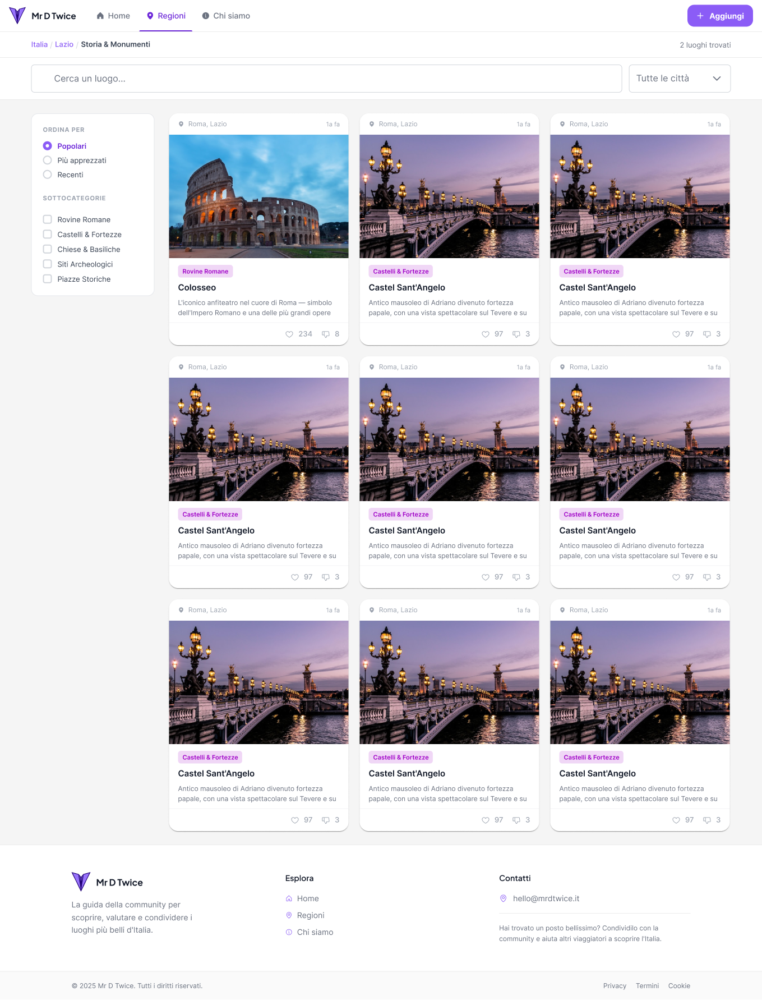

Riccardo
Integrazione, routing, design system, pagine chiave, immagini responsive e accessibilità.
Final project · Academy
MrDTwice trasforma un catalogo di destinazioni in una guida community-driven: esplorare, filtrare, contribuire e lasciare un segnale di gradimento.

Nei primi due giorni abbiamo lavorato tutti insieme: problema, utenti, flussi, architettura informativa, mockup e scelta dello stack. Solo dopo abbiamo diviso i focus.
Come rendere semplice la scoperta di luoghi interessanti.
Visitatore, contributore e persona che lascia feedback.
User flow, wireframe, mockup e tassonomia.
Angular, Express, PostgreSQL e Storage Supabase.
Integrazione, routing, design system, pagine chiave, immagini responsive e accessibilità.
Database, query, API/service, content card e pagine regione data-driven.
Homepage, navbar/footer, pagina 404, stile globale, setup e presentazione.
Form “Aggiungi luogo”, modale, validazione e upload immagini via backend.
02 · Dati e discovery
Dalla connessione al database alle pagine regione: trasformare righe e query in contenuti che l’utente può davvero esplorare.
Backend e database, query e API service, integrazione frontend/backend, CardContent, RegionTag e RegionDetail.


Hero, identità visuale e CTA chiariscono il tema al primo sguardo.
Regioni e contenuti in evidenza evitano una partenza “a vuoto”.
Like e attività recente mostrano cosa interessa alla community.
La CTA “Aggiungi luogo” resta visibile nella navigazione globale.
Per uno stakeholder, è il punto in cui valore, tono e catalogo diventano una sola storia.


Categoria, sottocategoria e regione.
Città e nome del luogo.
Descrizione rich text con limiti leggibili.
Immagine, anteprima, invio e conferma.
← → per navigare · Home/End per inizio e fine